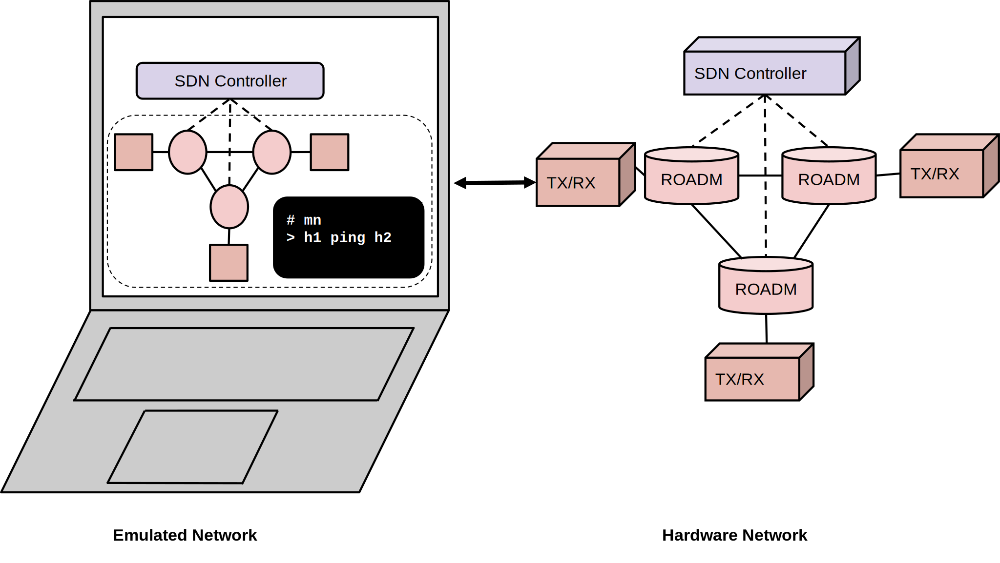
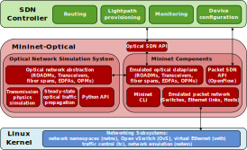

Architecture Overview¶
Mininet-Optical is an optical network emulation tool that seeks to expand on Mininet’s capabilities by simulating an optical network with elements such as Fiber Optic Cables, Terminals, Reconfigurable Optical Add-Drop Multiplexers (ROADMs), and Erbium-Doped Fiber Amplifiers (EDFAa).
Mininet is a packet network emulation tool that creates a realistic virtual network, running real kernel, switch and application code,on a single machine (VM, cloud or native). Since it is very easy to interact with the realistic virtual network using the Mininet CLI (and API), customize it, share it with others, or deploy it on real hardware, Mininet is useful for development, teaching, and research. Mininet is also a great convenient to develop, share, and experiment with Software-Defined Networking (SDN) systems usingOpenFlow and/or P4.

The illustrated virtual network is equivalent to the real network. The goal for Mininet-Optical is to enable the same control software to work on a software-emulated virtual network and on a hardware testbed. Mininet-optical can enable us to create a “digital twin” of a real network (or testbed) and carry out experiments in a sotware environment. This enables faster turn out time and a fail-safe approach. The emulated network can be easily reset to its original condition for repeatability or in the case of errors.
Architecture¶
Mininet-Optical creates an abstraction layer over the kernel of the base Linux OS. The Mininet-Optical Python library has implementations for various optical networking devices like Fiber Optic Cables, Terminals, ROADMs, and EDFAs. The library also has modules for Optical signal generation and propagation. An user can modify or add further device modules using Python.
The network devices implemented inside Mininet-Optical interact with the SDN interface via the Python API. The SDN interface enables external control software and algorithms to configure and manage the optical devices.
Mininet/Mininet-Optical uses lightweight containers (processes/cgroups in network namespaces) to create emulated hosts, and uses various features of the Linux kernel such as Open vSwitch and virtual Ethernet (veth) pairs to model network elements. Mininet-Optical extends packet Mininet with emulated optical network elements, which are connected to an optical network simulator that models the transmission physics. Northbound control and management interfaces enable external SDN control of the optical network elements.
The overall architecture is illustrated below:
